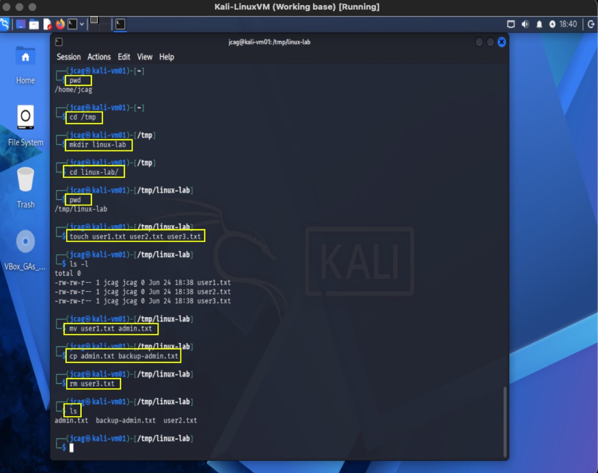
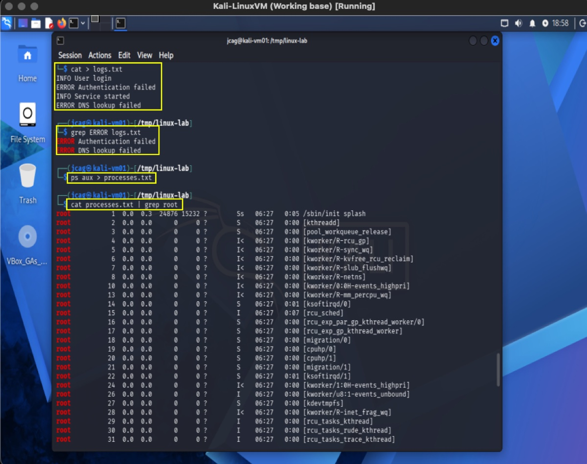

Overview
The Linux Command Line Interface (CLI) is the primary method for administering Linux systems in enterprise, server, cloud, and cybersecurity environments. Unlike graphical interfaces, the CLI provides direct access to system resources, automation capabilities, troubleshooting tools, and administrative functions.
This module introduces the foundational Linux commands required for system navigation, file management, user interaction, permissions inspection, and basic administrative operations.
Learning Objectives
- Understand the Linux shell environment.
- Navigate the Linux filesystem hierarchy.
- Manage files and directories from the command line.
- View and manipulate file contents.
- Use command-line help systems.
- Redirect command output and input.
- Search for files and text within a system.
- Understand command syntax and common conventions.
- Execute basic administrative tasks.
Linux Shell Fundamentals
What is a Shell?
A shell is a command interpreter that provides a user interface for interacting with the operating system.
Common Linux shells include:
| Shell | Description |
|---|---|
| Bash | Bourne Again Shell (default on many distributions) |
| Zsh | Extended shell with advanced features |
| Sh | Original Bourne Shell |
| Fish | User-friendly interactive shell |
| Ksh | Korn Shell |
Verify the current shell:
echo $SHELLExample output:
/bin/bashUnderstanding Command Syntax
Linux commands generally follow the structure:
command [options] [arguments]Example:
ls -l /homeBreakdown:
| Component | Purpose |
|---|---|
| ls | Command |
| -l | Option |
| /home | Argument |
Accessing Help
Manual Pages
Display command documentation:
man lsNavigation keys:
| Key | Function |
|---|---|
| Space | Next page |
| b | Previous page |
| / | Search |
| q | Quit |
Command Help
Many commands provide built-in help:
ls --helpExample:
cp --helpDetermine Command Purpose
whatis lsOutput:
ls (1) - list directory contentsFilesystem Navigation
Current Working Directory
Display current location:
pwdExample:
/home/adminList Directory Contents
Basic listing:
lsDetailed listing:
ls -lShow hidden files:
ls -laExample output:
drwxr-xr-x 2 admin admin 4096 Jun 15 Documents
-rw-r--r-- 1 admin admin 124 notes.txtChange Directory
Move into a directory:
cd DocumentsMove up one level:
cd ..Return to home directory:
cd ~Return to previous directory:
cd -Linux Filesystem Structure
Linux follows a standardized filesystem hierarchy.
| Directory | Purpose |
|---|---|
| / | Root directory |
| /home | User home directories |
| /root | Root user home directory |
| /etc | Configuration files |
| /var | Variable system data |
| /tmp | Temporary files |
| /usr | User programs and libraries |
| /bin | Essential commands |
| /sbin | Administrative commands |
| /dev | Device files |
| /proc | Process information |
| /boot | Bootloader files |
View top-level directories:
ls /File and Directory Management
Create Files
Using touch:
touch file1.txtCreate Directories
mkdir projectsCreate Nested Directories
mkdir -p projects/linux/module1Copy Files
Copy a file:
cp file1.txt backup.txtCopy a directory recursively:
cp -r source_dir destination_dirMove and Rename Files
mv oldname.txt newname.txtDelete Files
Remove file:
rm file.txtRemove directory recursively:
rm -r directoryForce deletion:
rm -rf directoryViewing File Contents
Display Entire File
cat file.txtView Large Files
less logfile.logNavigation:
| Key | Function |
|---|---|
| Space | Next page |
| b | Previous page |
| q | Quit |
Display Beginning of File
head file.txtShow first 20 lines:
head -20 file.txtDisplay End of File
tail file.txtMonitor live updates:
tail -f logfile.logSearching for Files
Find Command
Locate files by name:
find /home -name "*.txt"Locate directories:
find /var -type dInput and Output Redirection
Linux treats everything as a stream.
| Operator | Purpose |
|---|---|
| > | Overwrite file |
| >> | Append to file |
| < | Input redirection |
| | | Pipe output |
Redirect Output
ls > files.txtAppend:
date >> audit.logPipe Commands
Example:
ls -l | lessExample:
cat logfile.log | grep ERRORWorking with Wildcards
Asterisk (*)
Matches multiple characters.
ls *.txtQuestion Mark (?)
Matches one character.
ls file?.txtMatches:
file1.txt
file2.txtCommand History
View history:
historyExecute previous command:
!!Execute command number:
!150Search history:
Ctrl + RUser Identity Commands
Display current user:
whoamiDisplay user information:
idExample:
uid=1000(admin) gid=1000(admin)Host Information
Display hostname:
hostnameKernel information:
uname -rDetailed system information:
uname -aEnvironment Variables
View all variables:
envDisplay a specific variable:
echo $PATHExample:
/usr/local/bin:/usr/bin:/binBasic Administrative Commands
Switch User
su -Execute as Root
sudo commandExample:
sudo apt updateCommand Substitution
Execute a command inside another command.
echo "Today is $(date)"Output:
Today is Sun Jun 14 12:00:00 UTC 2026Common Keyboard Shortcuts
| Shortcut | Function |
|---|---|
| Ctrl + C | Stop running process |
| Ctrl + Z | Suspend process |
| Ctrl + D | Logout / End input |
| Ctrl + L | Clear screen |
| Ctrl + R | Search command history |
| Tab | Auto-complete command |
| Up Arrow | Previous command |
| Down Arrow | Next command |
Practical Exercises
Exercise 1 – Filesystem Navigation
- Display current directory.
- Navigate to
/tmp. - Create a directory named
linux-lab. - Enter the directory.
- Verify your location.
Commands:
pwd
cd /tmp
mkdir linux-lab
cd linux-lab
pwd
Exercise 2 – File Management
Create three files:
touch user1.txt user2.txt user3.txtList files:
ls -lRename a file:
mv user1.txt admin.txtCopy a file:
cp admin.txt backup-admin.txtDelete a file:
rm user3.txt
Exercise 3 – Text Searching
Create a file:
cat > logs.txtEnter the following content:
INFO User login
ERROR Authentication failed
INFO Service started
ERROR DNS lookup failedSave the file:
Ctrl + DSearch for ERROR entries:
grep ERROR logs.txt
Exercise 4 – Redirection and Pipes
Save running processes:
ps aux > processes.txtSearch for root-owned processes:
cat processes.txt | grep root
Troubleshooting Checklist
| Issue | Verification Command |
|---|---|
| Current location unknown | pwd |
| Cannot find file | find |
| Command not found | which command |
| Need help | man command |
| Verify user | whoami |
| Verify permissions | ls -l |
| Verify environment | env |
| Review history | history |
Key Takeaways
- The Linux CLI is the primary interface for system administration.
- Linux commands follow a structured syntax consisting of commands, options, and arguments.
- Filesystem navigation relies heavily on
pwd,ls, andcd. - File management is performed using
touch,mkdir,cp,mv, andrm. - Content inspection uses
cat,less,head, andtail. - Searching is performed using
findandgrep. - Redirection and pipes are foundational tools for automation and troubleshooting.
- Administrative tasks often require
sudo. - Command history and keyboard shortcuts significantly improve productivity.